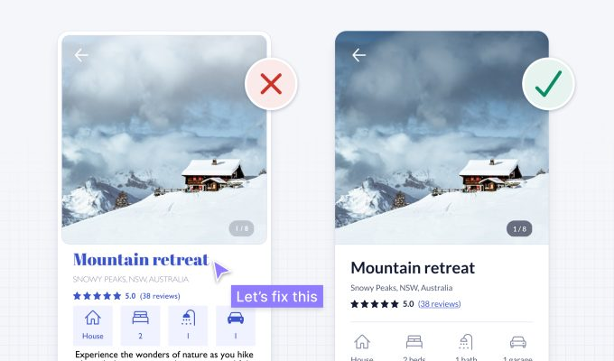

16 little UI design rules that make a big impact
A UI design case study to redesign an example user interface using logical rules or guidelines
User interface design is hard. With so many options to choose from regarding layout, spacing, typography, and colour, making design decisions can be overwhelming. When you add usability, accessibility, and psychology to the mix, it gets even harder.
Luckily, UI design doesn’t have to be so hard. Over nearly 2 decades working as a product designer, I’ve realised that most of my visual and interaction design decisions are governed by a system of logical rules. Not artistic flair or magical intuition, just simple rules.
Having a system of logical rules helps you efficiently make informed design decisions. Without a logical system, you’re just using gut feeling to move stuff around until it looks pretty.
I love rules and logic, but design decisions are rarely black and white. Rather than strict rules that you must follow, think of the following advice as helpful guidelines that work well in most cases.
The quickest way to learn is by doing, so let’s get started.
Let’s fix this example using logical rules
The following 2 designs are for the property details page of a short-term property rental app. The first one is the original design. The second is the result of applying some logical rules or guidelines.
Even without much visual or interaction design experience, you’ll probably notice that the original design feels messy, complicated, and difficult to use. This is because it contains many problematic design details that pose a risk to usability. Perhaps you can already spot a few?
Let’s fix the problems with the original design one at a time using the following logical rules or guidelines:
- Use space to group related elements
- Be consistent
- Ensure similar looking elements function similarly
- Create a clear visual hierarchy
- Remove unnecessary styles
- Use colour purposefully
- Ensure interface elements have a 3:1 contrast ratio
- Ensure text has a 4.5:1 contrast ratio
- Don’t rely on colour alone as an indicator
- Use a single sans serif typeface
- Use a typeface with taller lower case letters
- Limit the use of uppercase
- Use regular and bold font weights only
- Avoid pure black text
- Left align text
- Use at least 1.5 line height for body text
1. Use space to group related elements
Breaking up information into smaller groups of related elements helps to structure and organise an interface. This makes it faster and easier for people to understand and remember.
You can group related elements using the following methods:
- Place related elements in the same container
- Space related elements close together
- Make related elements look similar
- Align related elements in a continuous line
Using containers is the strongest visual cue to group interface elements, but it can add unnecessary clutter. Look for opportunities to use other grouping methods, they’re often more subtle and can help simplify designs.
Using space in particular is a very effective and simple way to group related elements. You can also combine grouping methods to help display groupings more clearly.
In our example, the lack of space between content makes the design look cluttered and difficult to understand. Increasing spacing helps to clearly group content, making it more organised and easier to understand.

2. Be consistent
Consistency in UI design means that similar elements look and work in a similar way. This should be true both within your product and when compared with other well-established products. This predictable functionality improves usability and reduces errors, as people don’t need to keep learning how things work.
In our example, the icon styles are inconsistent, as some are filled and others aren’t. This could confuse some people, as filled icons often indicate that an element is selected. Outlining all icons with a 2pt stroke weight and rounded corners improves consistency and gives each icon a similar visual weight.
Text labels are also added to the icons to help ensure people can understand what they mean, especially those using screen readers (software that describes an interface, using speech or braille, to someone who can’t see it).
3. Ensure similar looking elements function similarly
If elements look similar, people will expect them to work in a similar way. So try to ensure that you use a consistent visual treatment for elements with the same functionality. Conversely, try to ensure elements with different functionality look different.
In our example, the icon containers have a similar visual style to the “book now” button. This makes them seem interactive, even though they’re not. Removing the blue colour and button styling from the icons helps to avoid them being mistaken for interactive elements.
4. Create a clear visual hierarchy
Not all information in an interface has the same level of importance. Aim to present information in order of importance by making more important elements look more prominent.
A clear order of importance, or visual hierarchy, helps people scan information quickly and focus on areas of interest. It also improves aesthetics by creating a sense of order. You can create a clear visual hierarchy using variations in size, colour, contrast, spacing, position, and depth.
Here’s an example of a website hero banner without a clear visual hierarchy, followed by one with elements clearly presented in order of importance.
A quick and easy way to test whether your visual hierarchy is clear is to use The Squint Test. Simply squint your eyes and look at your design. Alternatively you can move further away from the screen or blur your design. You should still be able to tell what the most important elements are and recognise what the interface is for.
Let’s apply the Squint Test to our example. We can see that there are multiple elements with similarly strong prominence competing for attention. Meanwhile, the primary action in the bottom left doesn’t stand out at all.
The primary action should generally be the most prominent element on an interface. Giving it a high contrast background colour and bold font weight helps achieve this. This also fixes an accessibility issue with the low contrast button, which we’ll look into later.

Applying the Squint Test to the updated design, the primary action is clearly the most prominent element.

The visual hierarchy is now clearer, but there’s still room for improvement. For example, the block of body text is still too prominent relative to its level of importance. We’ll learn some quick typography guidelines shortly, which will help correct the visual hierarchy.
5. Remove unnecessary styles
Unnecessary information and visual styles can be distracting and can increase cognitive load (the amount of brain power required to use an interface). Avoid unnecessary lines, colours, backgrounds, and animations to create a simpler, more focused interface.
In our example, the white space and borders around the image add unnecessary visual complexity. They’re not needed to convey information or group elements, so we can safely remove them to simplify the design.
6. Use colour purposefully
Use colour sparingly and with purpose. Try to avoid using colour purely for decoration, as it can be confusing and distracting. Start with black and white and introduce colour where it conveys meaning.
A simple and effective approach is to apply the brand colour to interactive elements like text links and buttons. This helps teach people what’s interactive and what’s not. Try to avoid using the brand colour on non-interactive elements.
You don’t need to add colour to all interactive elements, as some already have visual cues that indicate they’re interactive. For example, the cards in the following example still feel interactive, with or without the blue coloured link.
In our original example, the blue heading might look nice, but it makes the text seem interactive. To help avoid confusion, we remove the blue colour from the heading as it’s not interactive.
We also remove the blue colour from other non-interactive elements like the star rating. This makes it much easier to see what’s interactive and what’s not.
7. Ensure interface elements have a 3:1 contrast ratio
Contrast is a measure of the difference in perceived brightness between two colours. It’s expressed as a ratio ranging from 1:1 to 21:1. For example, black text on a black background has the lowest 1:1 contrast ratio, whereas black text on a white background has the highest 21:1 ratio. There are many online tools to help you measure contrast ratios between different colours.
In order to help ensure people with vision impairments can clearly see interface details, aim to at least meet Web Content Accessibility Guidelines (WCAG) 2.1 level AA colour contrast requirements. This means user interface elements, like form fields and buttons, need to have at least a 3:1 contrast ratio.
In our example, the arrow icon contrast is too low. Adding a shadow to the icon and a gradient overlay on the top third of the image gives the icon sufficient 3:1 contrast, regardless of the image it sits on.

The primary button contrast in the original example was also too low. We fixed it previously when addressing the visual hierarchy, but it’s also worth mentioning here.
The risk with the low contrast button is that people with low vision might not identify it as a button, as they can’t see the button shape. Increasing the button contrast ratio above 3:1 makes the button accessible and also helps correct the visual hierarchy.
Increasing the arrow and button contrast to a ratio above 3:1 gives us the following design. We’re getting there bit by bit, but we’ve still got more issues to fix.
8. Ensure text has a 4.5:1 contrast ratio
In order to help ensure people with vision impairments can clearly read text, it needs to meet the following WCAG 2.1 level AA contrast requirements:
- Small text (18px and under) needs a minimum contrast of 4.5:1.
- Large text (above 18px with bold weight or above 24px with regular weight) needs a minimum contrast of 3:1.
In our example, the small text in the photo count element has insufficient contrast. We increase the contrast ratio above 4.5:1 by increasing the opacity of the grey container and also adding a text shadow.
The contrast of the location text is also too low. The thin font weight makes it even harder to read. Using a darker shade of grey helps make the text more accessible. We’ll make further updates to the text to improve it shortly.

9. Don’t rely on colour alone as an indicator
There are many different types of colour blindness and they mainly affect men. Commonly, people who are colour blind have difficulty distinguishing between red and green, but some aren’t able to see any colour at all.
To ensure an interface is accessible to those who are colour blind, you can’t rely on colour alone to convey meaning or distinguish visual elements. You need to use additional visual cues to differentiate interface elements.
In our example, the colour blue is used on the “reviews” text to indicate that it’s a link. If colour is removed, the link text looks the same as other text, so the colour blind can’t tell it’s a link. Underlining the link text clearly differentiates it from other text in the absence of colour.

10. Use a single sans serif typeface
A typeface is a set of related fonts with a similar style or aesthetic. Helvetica is an example of a typeface. Fonts are variations within a typeface, like weights or sizes. For example, Helvetica bold and Helvetica regular are 2 different fonts within the Helvetica typeface.
It’s safest to use a single sans serif typeface for interface design, as they’re generally the most legible, neutral, and simple.
In our example, the heading uses a detailed serif typeface that’s a bit difficult to read and could be distracting to some. It also has a personality that might not match some of the photos in this property rental app. Simplifying it using a sans serif typeface can help improve usability and aesthetics.
11. Use a typeface with taller lower case letters
Look for typefaces with taller lower case letters and greater letter spacing, as they’re generally more legible at small sizes. The height of lowercase letters in a typeface is known as the x-height.
Our example uses the Gill Sans typeface, which has a relatively low x-height. Changing the typeface to one with a larger x-height, like Lato, helps to improve readability.

Here’s what our example looks like after the typeface is updated from Gill Sans to Lato.
12. Limit the use of uppercase
Unless you’re shouting at people, there aren’t many valid reasons to use uppercase. IT’S LOUD AND DIFFICULT TO READ.
When you read, you look at the shape of a word, rather than looking at each letter. The shape helps you recognise the word more quickly. Uppercase words all have the same rectangular shape. This forces you to read each letter one by one.
In our example, the location text uses uppercase. Changing it to sentence case, where only the first word and proper nouns (names of people, places or things) are capitalised, helps to improve readability.
13. Use regular and bold font weights only
Just because there are lots of font weights available in a typeface, doesn’t mean you need to use all of them in your designs. Using lots of different font weights can add noise and clutter to your interface. It also makes it more difficult to use each font weight consistently.
Keep your design system simple and concise by using regular and bold font weights only.

Quick usage tips:
- Use bold font weight for headings to emphasise them.
- Use regular font weight for other smaller text.
- If you decide to use very thin or thick font weights, reserve them for headings and larger text, as they can be difficult to read at smaller sizes.
In our example, the location text uses a light font weight. Even though we’ve increased the contrast above the required 4.5:1 contrast ratio, the thin characters could still be difficult for some people to read. Increasing the font weight to regular helps improve readability and simplifies the design.
14. Avoid pure black text
For UI design, it’s generally safest to avoid pure black, as it has a very high contrast against white. This high contrast can cause eye strain and fatigue when reading text.
Black has 0% colour brightness and white has 100% colour brightness. The large difference in colour brightness causes our eyes to work harder. It’s safest to avoid pure black against white and opt for a dark grey instead.
In our example, pure black is used on multiple elements. Changing it to a dark grey helps to improve readability. Previously when looking at visual hierarchy, we noted that the property description text was too prominent. To make sure interface elements are presented in order of importance, we use a lighter grey for the property description text to decrease its prominence.
15. Left align text
English is read from left to right, downwards in an F-shaped pattern. So it’s best to keep text left aligned for optimal readability. For long body text, it’s safest to avoid centre aligned or justified text. It’s more difficult to read, especially for those with cognitive disabilities.
Centre alignment can work for headings and short text, as it can be quickly read. However, centre alignment makes longer body text harder to read, because the starting point of each line constantly changes. Your eyes need to work harder to find the starting point of each line.
In our example, the property description text is centre aligned. Left aligning the text improves readability and is also consistent with the left aligned text above.

16. Use at least 1.5 line height for body text
Line height is the vertical distance between two lines of text. The space between lines helps prevent people from rereading the same line of text. It also looks and feels more comfortable to read.
For accessibility and readability, especially for long body text, ensure that line height is at least 1.5 (150%). Keeping line height between 1.5 and 2 generally works well.
In our example, the line height is only 1 (100%). Increasing it to 1.6 (160%) helps to improve readability.
We fixed it!
With a handful of simple but powerful UI design guidelines, we quickly found and fixed a whole bunch of problems with our example design.
I hope you’re starting to see that UI design doesn’t have to be so hard. It might appear to be a magical art form, but a lot of it is made up from logical rules or guidelines like the ones we just learned. Using objective logic, rather than subjective opinion, makes it faster and easier to design intuitive, accessible, and beautiful interfaces.
Want more?
These are just a few of the logic-driven guidelines from my UI design book. You’ll find hundreds more with detailed examples in the book.

PS If you found this article helpful, share it with others and follow me on Twitter and LinkedIn for daily design tips, tools, resources, and inspiration.